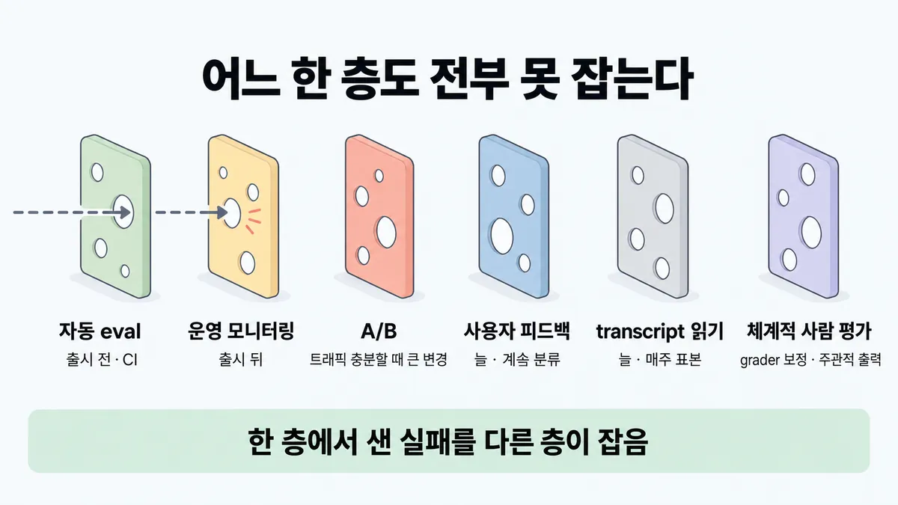
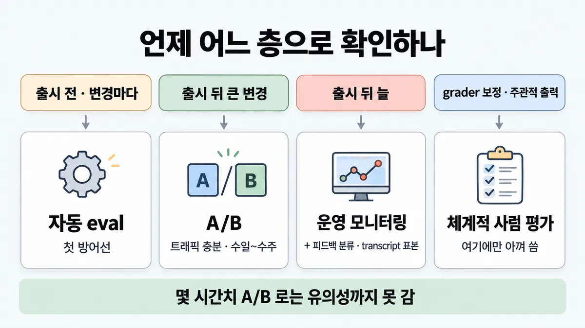
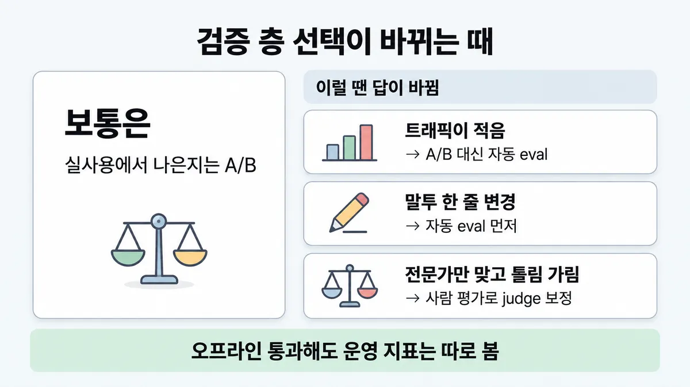

■ 검증 층
표시가 없는 문장은 공식 문서에서 확인한 내용이에요. 다른 표시는 읽는 법
왜 배우나 — 시험이 요구하는 것
시험 목표 4.3 A/B 테스트와 반복 개선 · D4 평가 16%Conduct A/B testing and iterative improvements
이 개념으로 푸는 판단 (할 수 있어야 하는 것)
- 4.3① 오프라인 eval 은 통과 — A/B 테스트는 언제 쓰나? (빈 목표) — 검증 층 고르기 (자동 eval · A/B · 운영 모니터링 · 사람 검토)
- 4.6② 출시 뒤 품질이 조용히 떨어진다 — 무엇을 돌리나? — 운영 신호를 eval 로 되먹이는 루프
한눈에
에이전트 성능을 아는 방법은 아래 6층이다
- 자동 eval
- 운영(production) 모니터링
- A/B
- 사용자 피드백
- transcript 직접 읽기
- 체계적 사람 평가
어느 한 층도 전부 잡지 못한다. 그래서 겹쳐 쓴다. 한 층에서 놓친 실패를 다른 층이 잡는다(스위스 치즈 모델)
층마다 시점이 다르다
- 자동 eval 은 출시 전과 CI 에서 쓴다
- 운영 모니터링은 출시 뒤에 쓴다
- A/B 는 트래픽이 충분할 때 큰 변경에 쓴다
- 피드백과 transcript 는 늘 쓴다
- 사람 평가는 grader(채점기) 보정과 주관적 출력에 쓴다
비유 배포 파이프라인과 같다. CI 테스트, 카나리, 운영 모니터링 순으로 간다. CI 가 초록이어도 카나리를 본다. 카나리를 몇 분 보고 전체 배포하지는 않는다


ELI5
구멍 난 치즈 여러 장을 겹쳐 놓는 거예요.
- 한 장만 있으면 구멍으로 벌레가 빠져나가요.
- 여러 장을 겹치면 구멍 자리가 달라서 벌레가 걸려요.
- 치즈마다 잘 막는 곳과 늦게 막는 곳이 달라요.
- 이 쪽은 "언제 어느 치즈를 먼저 대나"를 모아 둔 곳이에요.
개념 설명
원리
층 6개는 무엇으로 아는가가 다 다르다
- 자동 eval : 실사용자 없이 코드로 과제를 돌려 채점한다. 빠르고 재현되고 커밋마다 돌릴 수 있다. 대신 과제가 실사용과 어긋나면 "통과"가 거짓 확신이 된다.
- 운영 모니터링 : 실제 시스템의 지표와 오류를 본다. 진짜 사용자 행동을 본다. 대신 문제가 사용자에게 먼저 닿은 뒤에야 알게 된다(사후 대응). 채점할 정답도 없다.
- A/B : 실사용 트래픽을 나눠 두 버전을 비교한다. 유지율·과제 완료율 같은 진짜 결과를 재고 교란을 통제(control)한다. 대신 약점이 넷 있다.
- 유의성(우연이 아니라고 볼 만큼 표본이 쌓인 상태)까지 수일~수주가 걸린다
- 트래픽이 충분해야 한다
- 이미 배포한 변경만 시험한다
- 왜 움직였는지는 transcript 를 읽어야 알 수 있다
- 사용자 피드백 : 싫어요 표시와 버그 신고다. 예상 못 한 문제를 실제 예시와 함께 준다. 대신 드물다. 스스로 나선 사람만 남긴다. 심한 문제 쪽으로 쏠린다. 이유를 잘 안 적는다.
- transcript 직접 읽기 : 사람이 대화를 읽는다. failure modes(실패 유형) 감각과 미묘한 품질을 잡는다. 대신 규모를 못 키우고(사람 수만큼만) 정성 신호뿐이다.
- 체계적 사람 평가 : 훈련된 평가자 여럿이 구조화해 채점한다. 최고 품질 판정이고, LLM-as-judge(LLM 채점기)를 맞추는 기준이다. 대신 비싸고 느려 자주 못 돌린다.
왜 겹치나
- 층마다 구멍(못 보는 것)이 다르다. 그래서 한 층에서 놓친 실패를 다른 층이 잡는다. 이것이 스위스 치즈 모델이다.
- 시점도 다르다. 출시 전에는 자동 eval 과 사람 평가뿐이다. 출시 뒤에 운영(production) 모니터링과 피드백이 생긴다. 트래픽이 쌓여야 A/B 가 된다.
- 가장 잘하는 팀의 기본 조합은 자동 eval(빠른 반복), 운영 모니터링(실제 결과), 주기적 사람 검토(보정)다.
A/B 라는 말이 공식 문서 두 편에 세 뜻으로 나온다
- demystifying-evals 표 : 실사용 트래픽으로 두 버전을 비교한다(이 카드의 A/B).
- 같은 글의 사람 grader(채점기) 표 : 방법 목록에 A/B testing 이 들어 있다. 그래서 사람의 선택으로 채점하는 방식으로도 분류된다.
- define-success : "기준 모델이나 이전 버전과 성능 비교" 라는 넓은 뜻의 정량 방법이다. 그래서 지문이 A/B 를 어느 뜻으로 쓰는지 먼저 본다.
핵심 질문 두 개
- 지금 출시 전인가 뒤인가, 트래픽은 충분한가?
- 이 층이 못 보는 것(구멍)을 어느 층이 막고 있나?
규칙과 판단


갈림길
①③ 어느 층으로 확인 [4.3①]
자동 eval
출시 전과 CI 에서 변경·모델 업그레이드마다 돌린다. 이것이 첫 방어선이다
A/B
실사용 결과(유지율·과제 완료율)로 검증한다
A/B 말고 나머지 층
자동 eval, transcript 표본 읽기, 피드백 분류를 쓴다 업계 일반 공식은 "트래픽이 충분할 때" 조건만 둠
운영 모니터링 + 피드백 + transcript
피드백은 계속 분류한다. transcript 는 매주 표본을 읽는다
체계적 사람 평가
LLM-as-judge(LLM 채점기) 보정과 주관적 출력에만 아껴 쓴다
② 층 결과 읽기 [4.3①]
큰 변경이면 A/B·운영으로 확인한다
자동 eval 은 실사용 패턴과 어긋나면 거짓 확신을 준다
transcript 를 읽는다
A/B 는 transcript 없이는 '왜' 에 대한 신호가 약하다
아직 결론을 못 낸다
몇 시간치로는 유의성까지 못 간다
안전하다는 뜻이 아니다
피드백은 드물다. 스스로 나선 사람만 남긴다. 심한 문제 쪽으로 쏠린다
흐름
그림 속 이름·금액·시간·토큰 수는 예시예요. 공식 한도·동작은 카드 본문 값이 기준.
장면 글로 보기
칸 : 변경 → 자동 eval → A/B → 운영
규칙 (A/B) : 트래픽이 충분할 때 큰 변경에 쓴다. 유의성(우연이 아니라고 볼 만큼 표본이 쌓인 상태)까지 수일~수주가 걸린다
질문 : 어느 층이 무엇을 잡을까?
① 층을 차례로 ✓
- 시작 : 변경 — 쪽지 : 새 응답 흐름 v2 / (큰 변경)
- 돌림 : 변경 → 자동 eval : 커밋마다 돌고 사용자 영향이 없다 — 쪽지 : 과제 40개 : 통과 / regression 없음
- 넘김 : 자동 eval → A/B : 트래픽이 충분하고 큰 변경이다 — 쪽지 : A 50% : 기존 / B 50% : v2
- 타이머 : A/B : 유의성까지 수일~수주가 걸린다
- 넘김 : A/B → 운영 : 출시 뒤 분포 변화와 예상 못 한 실패를 본다 — 쪽지 : 2주 뒤 B 채택 · 전체 배포 / 이제 운영 모니터링
- 끝 : 한 층에서 놓친 실패를 다른 층이 잡는다
② 몇 시간치 A/B 로 결론 ≠
- 시작 : 변경 — 쪽지 : 새 응답 흐름 v2
- 돌림 : 변경 → 자동 eval : 오프라인에서 통과한다 — 쪽지 : 과제 40개 : 통과
- 넘김 : 자동 eval → A/B : 하루 2만 건을 반반 나눈다 — 쪽지 : A 50% · B 50%
- 타이머 : A/B : 유의성까지 수일~수주가 걸린다
- 결론 : A/B : 3시간 만에 결론을 낸다 — 쪽지 : 3시간째 완료율 / A 70% · B 74% / → "전체 배포하자"
- 끝 : 몇 시간치로는 유의성까지 못 간다. 아직 결론을 못 낸다
③ 자동 eval 만 믿는다 ≠
- 시작 : 변경 — 쪽지 : 새 응답 흐름 v2 / (큰 변경)
- 돌림 : 변경 → 자동 eval : 오프라인에서 통과한다 — 쪽지 : 과제 40개 : 95%
- 건너뜀 : A/B
- 새어 나감 : 자동 eval → 운영 : 실사용과 어긋나면 거짓 확신이 된다 — 말 : “새 상품은 왜 교환이 안 돼요?”
- 끝 : 오프라인 통과만 믿고 내보내면 사용자가 실패를 먼저 겪는다. 운영 모니터링은 사후 대응이다
규칙 원문 ①②③ (갈림길로 그린 규칙)
-
층마다 언제 무엇을 보는지 정리한다 [4.3①]
층 언제 강점 약점 자동 eval 출시 전·CI 에서, 에이전트 변경·모델 업그레이드마다 쓴다. 첫 방어선이다 빠르게 반복한다 · 완전히 재현된다 · 커밋마다 돌린다 · 사용자 영향이 없다 먼저 만드는 비용이 든다 · 계속 손봐야 한다(drift) · 실사용 패턴과 어긋나면 거짓 확신을 준다 운영 모니터링 출시 뒤에 분포 변화·예상 못 한 실패를 본다 실사용 행동을 본다 · 합성 eval 이 놓친 것을 잡는다 사후 대응이다(사용자가 먼저 겪는다) · 신호에 잡음이 많다 · 채점할 정답이 없다 A/B 트래픽이 충분할 때 큰 변경에 쓴다 실사용 결과(유지율·과제 완료율)를 잰다 · 교란을 통제(control)한다 유의성까지 수일~수주가 걸린다 · 배포한 변경만 시험한다 · transcript 없이는 '왜' 에 대한 신호가 약하다 사용자 피드백 늘 쓴다. 계속 분류한다 예상 못 한 문제를 잡는다 · 실제 예시가 온다 드물다 · 스스로 나선 사람만 남긴다 · 심한 문제 쪽으로 쏠린다 · 이유를 잘 안 말한다 · 사용자가 문제를 잡게 두면 사용자가 피해를 본다 transcript 직접 읽기 늘 쓴다. 매주 표본을 읽는다 failure modes(실패 유형) 감각이 생긴다 · 자동 검사가 놓친 미묘한 품질을 잡는다 시간이 든다 · 규모를 못 키운다(사람 수만큼만) · 정성 신호 위주다 체계적 사람 평가 LLM-as-judge 보정과 주관적 출력에만 아껴 쓴다 여러 사람의 최고 품질 판정을 얻는다 비싸고 느리다 · 자주 못 돌린다 · 판정 불일치를 조정해야 한다 운영 신호를 eval 과제로 되돌리는 법은 ■ 운영 → eval feedback loop 에 있다. grader 보정은 ■ LLM-as-judge 설계 에 있다
-
한 층으로 끝내지 않는다 [4.3①]
가장 잘하는 팀은 세 가지를 함께 쓴다
- 자동 eval(빠른 반복)
- 운영 모니터링(실제 결과)
- 주기적 사람 검토(보정)
오프라인 eval 이 올라도, 실사용 패턴과 어긋나면 거짓 확신이다. 큰 변경이면 A/B 와 운영으로 확인한다
A/B 지표가 움직이면 transcript 를 읽어야 '왜' 를 안다
불만이 안 들어와도 안전하다는 뜻이 아니다. 피드백은 드물고 심한 문제 쪽으로 쏠린다
-
A/B 쓰는 조건 : 아래 셋이 모두 맞을 때 쓴다. 유의성까지 수일~수주가 걸린다. 그래서 몇 시간치로는 유의성까지 못 간다 [4.3①]
- 트래픽이 충분하다
- 큰 변경이다
- 실사용 결과로 판단한다
트래픽이 적으면(하루 수십 건 사내 도구) A/B 말고 나머지 층을 쓴다. 자동 eval, transcript 표본 읽기, 피드백 분류다 업계 일반 공식은 "트래픽이 충분할 때" 조건만 둠
A/B 세부는 아래 넷이다 업계 일반 Anthropic 문서에 세부 없음
- 무작위 배정
- 표본 크기
- 유의성 검정
- 몇 개를 동시에 돌리나
더 깊이 : 판단 규칙 · 상황 변수 (설명)
판단 규칙
| 조건 | 답 | 근거 |
|---|---|---|
| 출시 전이고, 변경마다 확인한다 | 자동 eval 을 쓴다 (CI/CD, 첫 방어선) | demystifying-evals "Automated evals are especially useful pre-launch and in CI/CD, running on each agent change and model upgrade as the first line of defense" |
| 출시 뒤에 분포 변화·예상 못 한 실패를 감지한다 | 운영 모니터링을 쓴다 | "Production monitoring kicks in post-launch to detect distribution drift and unanticipated real-world failures." |
| 출시 뒤 큰 변경이고 트래픽이 충분하다 | A/B 를 쓴다 | "A/B testing validates significant changes once you have sufficient traffic." |
| A/B 결과를 얼마나 기다리나 묻는다 | 수일~수주 | "Slow; days or weeks to reach significance and requires sufficient traffic" |
| A/B 지표가 움직였는데 이유를 모른다 | transcript 를 읽는다 | "Less signal on the underlying “why” … without being able to thoroughly review the transcripts" |
| 피드백과 transcript 를 언제 보나 묻는다 | 늘 본다. 피드백은 계속 분류하고, transcript 는 매주 표본을 읽는다 | "triage feedback constantly, sample transcripts to read weekly, and dig deeper as needed" |
| 체계적 사람 평가를 언제 쓰나 묻는다 | LLM-as-judge 보정과 주관적 출력에만 쓴다 | "Reserve systematic human studies for calibrating LLM graders or evaluating subjective outputs" |
| 한 층만으로 되나 묻는다 | 안 된다. 겹쳐 쓴다 | "no single evaluation layer catches every issue" · 308줄 조합 |
상황 변수
| 변수 | 값 | 답 쪽 | 등급 | 근거 |
|---|---|---|---|---|
| 출시 단계 | 출시 전이다 (트래픽 0) | 자동 eval 과 사람 평가·transcript 를 쓴다. 운영·A/B·피드백은 아직 없다 | (층마다 시점) | |
| 출시 단계 | 출시 뒤다 | 운영 모니터링 · 피드백 · transcript 가 더해진다 | ||
| 트래픽 | 하루 수만 건이다 | A/B 를 쓸 수 있다 (그래도 수일~수주) | ||
| 트래픽 | 하루 수십 건이다 | A/B 로는 유의성까지 너무 오래 걸린다. 자동 eval, transcript, 피드백을 쓴다 | 업계 일반 | 뒤집히는 때 1 |
| 변경 크기 | 큰 변경이다 (새 흐름·새 모델) | A/B 대상이다 | "significant changes" | |
| 변경 크기 | 문구 한 줄이다 | 자동 eval 로 충분할 때가 많다 | 업계 일반 | 뒤집히는 때 2 |
| 과제 성격 | 주관적이거나 법률·금융·의료다 | 사람 평가 층의 비중을 올린다 (전문가가 필요하다) | "Complex domains (legal, finance, healthcare) require human experts" | |
| 에이전트 성숙도 | 초기다 (변경 효과가 크다) | 작은 과제 셋으로도 차이가 보인다 | "this large effect size means small sample sizes suffice" | |
| 에이전트 성숙도 | 성숙했다 (효과가 작다) | 더 크고 어려운 eval 이 필요하다 | "More mature agents may need larger, more difficult evals to detect smaller effects" |
연습 문제
하루 2만 건 문의를 받는 고객지원 챗봇에 새 응답 흐름을 A/B 로 걸었다. 시작 3시간 만에몇 시간치 새 쪽의 과제 완료율이 4%p 높게 나오자 팀장은 트래픽도 충분하니 바로 전체 배포하자고 한다. 지금 판단은?
시험 대비
함정
- "오프라인 eval 을 통과했으니 A/B·운영 확인은 필요 없다" 는 함정이다. 자동 eval 은 실사용 패턴과 어긋나면 거짓 확신을 준다
- "A/B 가 있으니 오프라인 eval 은 생략한다" 는 함정이다. A/B 는 배포한 변경만 시험하고, 수일~수주가 걸린다. 자동 eval 은 커밋마다 돌고 사용자 영향이 없다
- "몇 시간치 A/B 가 좋으니 전체 배포한다" 는 함정이다. 몇 시간치로는 유의성까지 못 간다
- "새 버전이 더 나은지 카나리로 확인한다" 는 함정이다. 카나리는 일부에 내보내고 오류를 보는 것이다업계 일반 공식 문서에 카나리 없음. "두 변형 중 어느 쪽이 실사용에서 나은가" 는 A/B 로 본다. A/B 는 변형끼리 실사용 결과를 비교하고 교란을 통제한다
- "사용자 불만(싫어요 표시)을 주 탐지 수단으로 쓴다" 는 함정이다. 피드백은 드물고 쏠린다. 사용자가 문제를 잡게 두면 사용자가 피해를 본다
- "운영 대시보드가 멀쩡하니 품질도 OK" 는 함정이다. 운영 모니터링은 사후 대응이라 사용자가 먼저 겪는다. 채점할 정답도 없다
- "중요하니 변경마다 체계적 사람 평가를 한다" 는 함정이다. 비싸고 느려 자주 못 돌린다. grader 보정과 주관적 출력에만 쓴다
- "한 층만 제대로 하면 된다" 는 함정이다. 어느 한 층도 전부 잡지 못한다
신호
"Like the Swiss Cheese Model from safety engineering, no single evaluation layer catches every issue."
"A/B testing validates significant changes once you have sufficient traffic."
"Slow; days or weeks to reach significance and requires sufficient traffic"
"Production monitoring kicks in post-launch to detect distribution drift and unanticipated real-world failures."
"Can create false confidence if it doesn’t match real usage patterns"
"Reserve systematic human studies for calibrating LLM graders or evaluating subjective outputs where human consensus serves as the reference standard."
"The most effective teams combine these methods: automated evals for fast iteration, production monitoring for ground truth, and periodic human review for calibration."


더 깊이 : 뒤집히는 때 · 오답 재료 (설명)
뒤집히는 때
1. 트래픽이 적은 사내 도구 — A/B 가 사실상 안 되는 때
- 조건 : 하루 60건 쓰는 사내 도구다. 새 프롬프트가 과제 완료율을 70% 에서 73% 로 올렸는지 보고 싶다.
- 계산 : 두 비율 비교 표본식(양측 유의수준 5%, 검정력 80%)을 쓰면 한 쪽당 약 3,550건이 필요하다. (1.96 + 0.84)² × (0.70×0.30 + 0.73×0.27) ÷ 0.03² ≈ 3,550 이다. 하루 60건을 반반 나누면 한 쪽이 30건이다. 그러면 약 118일이 걸린다.
- 비교 : 하루 2만 건 고객 챗봇이면 한 쪽이 1만 건이다. 그래서 표본은 하루 안에 찬다. 그래도 공식은 "수일~수주" 라고 한다 (요일 효과 등. 업계 일반).
- 판단 : 트래픽이 적으면 A/B 대신 자동 eval, transcript 표본 읽기, 피드백 분류를 쓴다.
- 등급 : 업계 일반 (표본식은 통계 일반 지식이다. Anthropic 문서에는 표본 크기 세부가 없다). "sufficient traffic" 조건 자체는 확인.
- 근거 : demystifying-evals
2. 작은 변경인데 A/B 부터?
- 조건 : 시스템 프롬프트의 말투 문장 하나만 바꿨다.
- 판단 : 공식은 A/B 를 "significant changes" 용으로 둔다. 작은 변경은 자동 eval 로 먼저 본다. 효과가 작아 자동 eval 에서도 안 보이면 과제 셋을 키운다(성숙한 에이전트는 작은 효과를 보려면 더 큰 eval 이 필요하다).
- 등급 : (A/B 대상 = 큰 변경 · 성숙하면 더 큰 eval) + 업계 일반("작은 변경은 A/B 안 함"이라는 직접 문장은 없다)
3. 오프라인 eval 은 올랐는데 운영 지표는 그대로
- 조건 : 오프라인 eval 이 +5%p 올랐다. 그런데 출시 2주 뒤 과제 완료율에 변화가 없다.
- 판단 : 자동 eval 이 실사용 패턴과 어긋났을 가능성이 있다(거짓 확신). transcript 표본을 읽는다. 운영에서 본 실패를 eval 과제로 되돌린다(■ 운영 → eval feedback loop).
- 등급 : (자동 eval 약점 · 운영 모니터링 강점)
4. 법률 검토 에이전트 — 사람 평가를 아껴 쓰라는 규칙이 약해지는 때
- 조건 : 답이 주관적이다. 도메인 전문가만 맞고 틀림을 가릴 수 있다.
- 판단 : 사람 평가는 "LLM-as-judge 보정·주관적 출력"에 쓰는 층이다. 이 경우가 바로 그 자리다. 그래도 매 변경마다 쓰지는 않는다. 사람 판정으로 LLM-as-judge 를 맞춘 뒤 grader 로 규모를 키운다(■ LLM-as-judge 설계).
오답 재료
| 오답 | 왜 끌리나 | 왜 틀리나 | 등급 | 근거 |
|---|---|---|---|---|
| "몇 시간치 A/B 결과가 좋으니 전체 배포" | 숫자가 이미 좋아 보인다 | 유의성까지 수일~수주가 걸린다 | ||
| "오프라인 eval 통과했으니 A/B·운영 확인 불필요" | 테스트를 통과했다 | 실사용 패턴과 어긋나면 거짓 확신이다 | ||
| "A/B 가 있으니 오프라인 eval 생략" | 실사용 결과가 더 진짜 같다 | A/B 는 배포한 변경만 시험하고 느리다. 자동 eval 은 커밋마다 돌고 사용자 영향이 없다 | ||
| "하루 수십 건 사내 도구도 A/B 로 검증" | A/B 가 정석처럼 들린다 | 트래픽이 충분해야 한다. 그래서 결론까지 너무 오래 걸린다 | (조건) · 업계 일반(기간 계산) | 뒤집히는 때 1 |
| "사용자 피드백을 주 탐지 수단으로" | 실제 사용자 목소리다 | 드물고 쏠린다. 사용자가 문제를 잡게 두면 사용자가 피해를 본다 | "Relying primarily on users to catch issues can have negative user impact" | |
| "운영 대시보드가 멀쩡하니 품질 OK" | 오류율이 낮다 | 운영 모니터링은 사후 대응이다. 채점할 정답이 없다 | ||
| "중요하니 변경마다 체계적 사람 평가" | 사람이 제일 정확해 보인다 | 비싸고 느려 자주 못 돌린다. grader 보정과 주관적 출력에만 쓴다 | ||
| "제일 좋은 층 하나를 제대로" | 단순해 보인다 | 어느 한 층도 전부 잡지 못한다 |
참고
더 깊이 : 출처 · 상태 · 미해결 (참고)
미해결
- A/B 통계 세부(무작위 배정 · 표본 크기 · 유의성 검정 · 동시 실행 수)는 Anthropic 문서에 없다. demystifying-evals 에서
significance는 297줄 1건이다.sample size는 221줄(오프라인 eval 이야기) 1건뿐이다. 뒤집히는 때 1 의 표본식은 업계 일반이다. - "트래픽이 적으면 A/B 대신 무엇"은 공식 문장이 없다. 공식은 "sufficient traffic" 조건만 둔다. 카드의 대안(자동 eval + transcript + 피드백)은 층 표에서 끌어낸 추론이다.
- 목록 4.3① 의 "공식 표 6층" 과 영어 신호 3문장은 원문에서 모두 찾았다. 고친 곳은 없다. 목록의 "영상은 3층만" 은 영상을 보지 않아 확인하지 않았다.